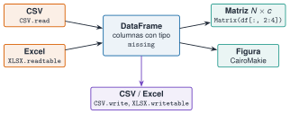

Los datos no llegan como matrices limpias: llegan como ficheros, en CSV o en Excel, con cabeceras, separadores raros, fechas, texto y huecos. Esta unidad enseña a leerlos con CSV.jl y XLSX.jl, a manejarlos como tabla con DataFrames.jl, a tratar los valores ausentes (missing) y a pasar de la tabla a una matriz o a una figura. Los ejemplos son dos: el registro de tres acelerómetros de un edificio, y la hoja de órdenes de mantenimiento de una planta.
NotaCómo se lee esta unidad
Tiempo orientativo: 90 minutos. Objetivos (4), teoría en cuatro píldoras (18), práctica guiada (40), «Pídeselo a Claude» (12), ejercicios (14) y cierre (2). Se usan datos sintéticos del repositorio (datos/sinteticos/), así que nadie necesita datos propios.
Objetivos y prerrequisitos
Objetivos. Al terminar esta unidad sabrás:
leer un CSV con separador y decimales propios y comprobar sus tipos con describe;
seleccionar, filtrar, ordenar y crear columnas en un DataFrame;
detectar y tratar valores ausentes sin que se propaguen por los cálculos;
leer y escribir una hoja de Excel con XLSX.jl;
pasar de una tabla a una matriz N × c y a una figura.
Reparto con otras unidades. Aquí se ve lo básico. Las uniones, las agrupaciones a fondo y las fechas están en J2.2; la limpieza de huecos, saltos y anómalos en J2.3. Cada conjunto de datos del curso lleva una ficha .meta.toml con su origen, sensor, frecuencia de muestreo y unidades, y hay que leerla antes de usar los datos.
Teoría breve
J1.6.1 Leer un CSV
Un CSV es un fichero de texto con una fila de cabecera y una fila por registro. CSV.read(ruta, DataFrame) lo carga y deduce los tipos de cada columna. Cuando el fichero no sigue el formato por defecto hay que decirlo: el separador (delim), el separador decimal (decimal) o qué texto significa «sin dato» (missingstring). Siempre se lee primero la ficha del conjunto de datos, que indica la frecuencia de muestreo y las unidades:
Un CSV europeo (separador ; y coma decimal) leído sin delim=';' y decimal=',' produce una sola columna de texto o números mal interpretados. Si la tabla tiene una sola columna enorme, el separador es el problema. Comprueba siempre size, names y describe justo después de leer.
Antes de analizar un conjunto de datos hay que leer su ficha .meta.toml para saber la frecuencia de muestreo y las unidades.
Verdadero. Sin esa información no se sabe si el eje de tiempos o los valores están en las unidades que se supone.
J1.6.2 El DataFrame
Un DataFrame es una tabla cuyas columnas son vectores con su propio tipo. Se accede a una columna con un punto (a.a1_ms2) y se resume con describe:
Ver el código
describe(a, :mean, :std, :min, :max)
4×5 DataFrame
Row
variable
mean
std
min
max
Symbol
Float64
Float64
Float64
Float64
1
tiempo_s
299.995
173.207
0.0
599.99
2
a1_ms2
2.50442e-5
0.233639
-0.907659
0.873723
3
a2_ms2
1.51247e-5
0.224417
-0.913122
0.922254
4
a3_ms2
2.38949e-5
0.198116
-0.745827
0.827014
Las operaciones de uso diario, con una fila de ejemplo cada una:
El registro del edificio dura 600 s a 100 Hz. ¿Cuántas filas tiene a?
\(600\cdot100=60\,000\) muestras (nrow(a)).
J1.6.3 Valores ausentes
En Julia un dato que falta es el valor especial missing, y una columna que puede contenerlo tiene tipo Union{Missing, Float64}. Lo importante es que missing se propaga: cualquier cálculo que lo incluya da missing, lo que evita que un hueco pase inadvertido.
Se tratan con ismissing (¿falta?), skipmissing (ignorarlos al calcular), dropmissing (quitar las filas con huecos) y coalesce (sustituirlos por un valor). Qué se hace con un hueco es una decisión de análisis, no un detalle técnico: ignorarlo, rellenarlo con cero o con la media dan resultados distintos, y en un informe hay que decir cuál se ha elegido y cuántos huecos había.
mean([1.0, missing, 3.0]) devuelve 2.0, porque Julia ignora los valores ausentes.
Falso. Devuelve missing: el hueco se propaga. Para obtener 2.0 hay que escribir mean(skipmissing(v)).
J1.6.4 Excel y escritura de resultados
Los datos de planta suelen estar en Excel. XLSX.jl lee una hoja completa como tabla con XLSX.readtable y escribe con XLSX.writetable; el resultado de un análisis se guarda en CSV con CSV.write. El recorrido completo, desde los ficheros hasta una figura y de vuelta a un fichero, es el de la Figura 1.

Figura 1: Recorrido de los datos tabulares. Los ficheros CSV y Excel se cargan en un DataFrame, que se convierte en una matriz para calcular o en una figura para mirar, y los resultados vuelven a un fichero.
NotaIdea clave
Los datos entran por ficheros y salen por ficheros, y la tabla es lo que hay en medio. Lo que se lee, se revisa (tamaño, tipos, ausentes) antes de calcular; lo que se escribe, se vuelve a leer para comprobar que está bien.
Un compañero te pasa un Excel de planta con una hoja por mes. Enumera tres comprobaciones que harías tras leerlo.
Que el tamaño (filas y columnas) y los nombres de columna son los esperados.
Que los tipos son los correctos (fechas como fechas, números como números).
Que se han contado y decidido qué hacer con los ausentes.
Práctica guiada
Dos casos: el registro de tres acelerómetros del edificio (datos de vibración) y la hoja de órdenes de mantenimiento de una planta (datos con huecos y fechas).
Caso 1. Registro de acelerómetros. Se comprueba que el paso de tiempo coincide con la ficha (100 Hz) y se calcula el RMS de cada planta. Como los tres sensores miden el mismo edificio con las mismas fuerzas, los RMS son parecidos pero no iguales.
Rellenar con cero baja la media de 940,94 € a 925,26 € (un 1,7 %), porque se está afirmando que esas órdenes no costaron nada. Ignorarlos es la opción razonable aquí, pero hay que dejarlo escrito.
En Python, pandas hace de DataFrames: read_csv, describe, isna, dropna, fillna. Los ausentes se representan con NaN y se ignoran por defecto en las medias (al revés que en Julia, donde se propagan). La versión probada con pytest, con los valores contrastados con los de Julia, está en python/tablas.py.
Dos diferencias a recordar: la media de pandas ignora NaN salvo que se pida lo contrario (skipna=False), lo que puede esconder huecos; y pandas guarda las columnas por separado, igual que DataFrames.jl, pero con una conversión a matriz distinta (df.to_numpy()).
NotaQué se ha conseguido
Dos conjuntos de datos leídos, revisados, resumidos y dibujados, un hueco tratado con una decisión explícita (y su efecto medido), y un Excel escrito y vuelto a leer. La rutina es la de siempre: leer la ficha, leer el fichero, revisar tamaño, tipos y ausentes, y solo después calcular.
«Pídeselo a Claude»
TipPrompt
«Con Julia y --project=., lee datos/sinteticos/curso-claude/c_mantenimiento.csv con CSV.jl y DataFrames.jl (cadenas como String). (1) Dime cuántas filas y columnas tiene, el tipo de cada columna y cuántos valores faltan en cada una; (2) calcula el coste medio de las órdenes correctivas ignorando los huecos; (3) agrupa por equipo y dame el número de órdenes y las horas de parada medias, de mayor a menor; (4) guarda ese resumen en un CSV en $TMPDIR y vuelve a leerlo para comprobar que coincide. No modifiques el CSV original ni leas nada de datos/privados/. No inventes cifras: si algo no sale, dilo.»
Verifica. (a) Que son 180 filas y 6 columnas y que solo coste_eur tiene huecos, 3. (b) Que el coste medio de las correctivas es 2960,65 € con 50 órdenes (compruébalo con filter y mean(skipmissing(...))). (c) Que usa skipmissing y no rellena con ceros sin avisar. (d) Que el equipo con más horas medias es el compresor K-201 con 4,385 h. (e) Que ha escrito el resumen fuera de datos/ y que el CSV original no cambia (git status).
Ejercicios
¿Cuántos valores faltan en la columna coste_eur de las órdenes de mantenimiento?
Tres (count(ismissing, ot.coste_eur)), de 180 filas; las tres son órdenes preventivas.
¿Cuál es el coste medio de las órdenes correctivas, ignorando los huecos?
filter(r -> r.tipo == "correctivo" && !ismissing(r.coste_eur), ot) y luego mean.
2960,65 € sobre 50 órdenes. El coste medio de todas las órdenes (940,94 €) es mucho menor porque las preventivas cuestan bastante menos.
Matrix(a[:, 2:4]) da una matriz de 60 000 × 3 en la que cada columna es el registro de una planta.
Verdadero. Es la matriz N × c (muestras × canales) que se usa en el curso, y la que esperan las funciones de Resonancia.jl.
Explica por qué rellenar con ceros los costes que faltan puede ser una mala decisión aunque «el código funcione».
Dice que equivale a afirmar que esas órdenes costaron cero.
Menciona que sesga la media (la baja) y que debe documentarse la decisión y el número de huecos.
La doy por superada si…
Leo un CSV con su separador y decimal, y reviso tamaño, tipos y ausentes antes de calcular.
Selecciono, filtro, ordeno y agrupo con un DataFrame.
Sé que missing se propaga y elijo skipmissing, dropmissing o coalesce con criterio.
Leo y escribo un Excel, y paso de la tabla a una matriz N × c y a una figura.
Consulto la ficha .meta.toml antes de usar un conjunto de datos.
Cierre. Escribe tres líneas: qué he entendido, qué todavía no domino y cuál es mi siguiente paso pequeño. Revisa con git diff lo que haya escrito Claude y confirma que no ha tocado datos/.